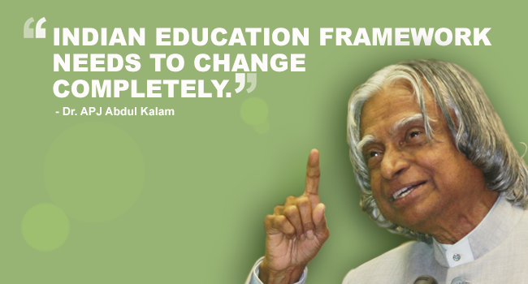

1.Just one out of nine children finishing school joins a college. India has one of the lowest higher education enrollment ratio of 11 per cent. In the US it is 83 per cent.
2.To meet its target of increasing enrollment levels to 15 per cent in 2012, the Eleventh Plan estimates that India needs to invest Rs 2,26,410 crore. Yet it has set aside only Rs 77,933 crore-just a fourth of the total needed.
3.A recent ASSCoM-McKinsey study showed that only one out of Ten Indian students with degrees in humanities and one out of four engineering graduates are employable. So much for India’s boast of having one of the largest technical and scientific manpower reserves in the world.
4.A study by the National Assessment and Accreditation Council showed that 90 per cent of the colleges and 70 per cent of the universities that the council graded were of middling or poor quality.
5.Shortage of teachers was endemic with even the IITs reporting a 20 to 30 per cent shortfall in faculty.
6.Studies show that the number of students committing suicide because of the pressure to perform well in secondary board exams is rising alarmingly.